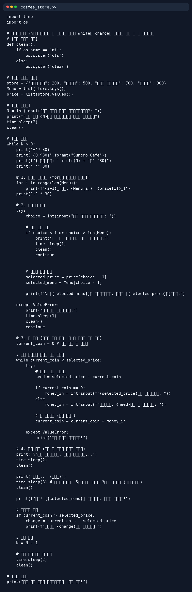

제가 만든 커피자판기 프로그램입니다

이 프로그램은 파이썬으로 개발되었습니다.
프로그램 설명
사용자가 먼저 커피 재고를 투입하고, 메뉴 항목으로 넘어와 커피 종류를 고르고 메뉴에 맞는 금액을 모두 투입하면 선택한 커피를 출력하는 방식으로 작동합니다.
파이썬을 독학하면서 만든 프로그램으로 코딩의 흥미를 느낄 수 있었고 앞으로 C언어를 배울 때도 도움을 받을 수 있을 것 같습니다.
현재는 파이썬 공부를 멈추고 학교 수업에 집중하고 있지만 시간이 된다면 다시 독학을 이어갈 계획입니다.
점프 투 파이썬 교재로 스스로 공부했으며 현재 def 함수 부분까지 공부한 상태입니다.
(그외 부분 코드는 ai의 도움을 받았으며, 옆의 이미지는 ai가 제 코드를 시각화하여 만들어준 커피자판기 코드 이미지입니다.)
일본사에서 언급한 사무라이 시대 내용
오닌의 난을 시작으로 일본의 전국 시대가 시작되었고, 전국시대가 막을 내리고 도쿠가와 이에야스가 에도막부를 세우면서 다큐멘터리가 마무리 됩니다.

위의 이미지를 클릭하시면 사무라이의 시대 다큐멘터리 내용을 자세히 볼 수 있는 나무위키 페이지로 이동합니다.